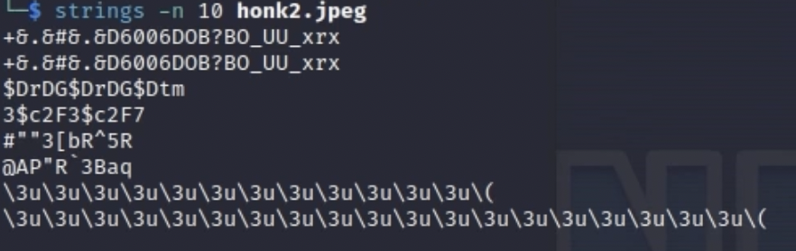
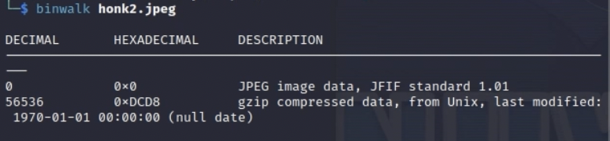

Digital Forensics Challenge
In this CTF challenge, we are given this image and told to find the flag within the image. Now first for these type of challenges for when i'm given an image and try to find a flag within the image, my thought process is number one, always start out with the strings command. The strings command basically scans a file and prints every sequence of printable characters it finds. It doesn't understand file formats or images, it just looks for runs of ASCII bytes and shows them. So if a flag were to be hidden in an image, the string command would output the flag.
Okay, now here is where it gets fun. Since I couldn't find any printable ASCII characters from the binary file, I now then would use a hex editor to look at this file at a really low level. Now there are a few things to mark about a jpeg file. One is that there are different markers within the jpeg file that signal the beggining and the end of the actual image. When we see a "FF D8", thats actually the marker for the beggining of the jpeg file. Additonally, "FF D9" marks the end of the jpeg file. So when I searched for FF D8 and FF D9, I noticed that there was some leftover data at the end of the FF D9. This signals to me that there something fishy going on here because I could delete all of the data after the FF D9 and the image would still render properly. This is an example called "File Carving" where we have to actualy seperate the leftover data from the image and figure out what the excess is and what it could possibly mean.
Now to try to figure out what the excess bytes mean, we can use a tool called binwalk. The way binwalk works is that you give it a file and it will actually go through and identify what types of data could be hidden inside that binary file. So we see that it gives us a jpeg image data, but it also says that there is a gzip compressed data within the actual image. This tells us that there is actually compressed data within the file (jackpot).
Now we can run the binwalk command again but this time with the -e flag to signal to the command that we want to extract the data. So when I ran it again, I got a folder called _honk2.jpeg.extracted that contains the data that was extracted and we can see that there was a file inside that contained the actual flag. Yay!